Databricks Cluster Log Analyzer
Point it at the logs Databricks delivers for a cluster. It shows what ran, where the time went, what failed and why, which tables cost the most, how many rows moved between steps, and what to change. It runs on your laptop: no Spark, no cluster.
It is not a perfect tool, but it is a fast one, and it helps every time. In most cases (90% to 99%, depending on the problem) it names the real issue on its own, in minutes and with little effort from you. When it can't, it still gives you enough data to work it out yourself: its findings help you rule things out and show you where to dive in. So it helps with the analysis 100% of the time. You know where to look and what to fix in minutes, not hours, and you can trust what you find.
- Driver, executor and Spark event logs
- Local folder, Unity Catalog volume, ADLS, S3
- Parquet datasets + DuckDB
- Local web UI
- Python 3.11+, no Node.js
What it does
It reads the raw logs (driver log4j logs, driver and executor stdout/stderr, and the Spark event log), turns them into Parquet datasets, and serves a web UI on your machine. You drill down one level at a time, from the whole cluster to the exact stage or task:
cluster → run (a Databricks job run, notebook or session) → query → Spark job → stage → task.
- Time: how long the cluster was up, next to the run time added up over all runs (overlapping runs add up to more than the clock), and the time a run's tasks sat queued on a full cluster. Each run's and each query's time is split by cause: waiting for cores, CPU, storage, GC, writing shuffle, waiting for shuffle data, or no Spark work.
- Failures: a cluster shows as failed only when a job or query failed. Task retries that succeeded are shown as retries, never as failures. Lost, killed and out-of-memory executors are listed, and errors are grouped by fingerprint, each with the first frame of your own code.
- What to change: fixes grouped by impact, each with what the data shows, the likely cause, the setting or code change, and the problems found behind it. For the whole cluster and for each run.
- Tables: for the cluster, a run or one query: size, file count, file size (average, smallest and largest), rows per file, files skipped, bytes and rows pulled, scan time and task time. It flags files over 1 GiB, big tables read whole, and tables scanned again and again.
- Rows: rows read and written (inserted, updated, deleted, copied unchanged) per table and query; rows in (per parent stage) and out of every stage, with a flag on a join that puts out more rows than came in; and the rows passed between Spark jobs and between queries.
How the screens are laid out. A cluster has its own tabs: Overview, Findings, Errors, Executors, Logs and Raw data, all for the whole cluster. There, Findings and Errors list every run's problems, each with a chip naming its run. Pick a run and you get the run's tabs: Overview, Findings & errors (only that run), Queries & stages, Events & timeline, Executors and Logs & raw data. The tour below starts at Home, works down from the cluster to a single task, then covers the other tabs.
Sizes are binary everywhere: KiB, MiB, GiB and TiB (1 GiB = 1024 MiB). Colours: red and amber mark status only (failed, worth a look); low severity is grey, and spill has one colour on every chart.
Install and run
You need only Python 3.11+. The web UI is already built and ships in the package, so you don't need
Node.js. A browser tab opens at http://127.0.0.1:8765.
Windows (PowerShell)
git clone https://github.com/darshanmeel/databricks-log-analyzer.git
cd databricks-log-analyzer
python -m pip install -e .
dbx-log-analyzer ui --output C:\dbx\output --cache C:\dbx\cachemacOS / Linux
git clone https://github.com/darshanmeel/databricks-log-analyzer.git
cd databricks-log-analyzer
python3 -m pip install -e .
dbx-log-analyzer ui --output ~/dbx/output --cache ~/dbx/cacheWithout installing the package
Install the libraries once, then point Python at src each time:
Windows (PowerShell)
python -m pip install pandas pyarrow duckdb click fastapi uvicorn # once
$env:PYTHONPATH = "src" # in every new window
python -m databricks_cluster_log_analyzer ui --output C:\dbx\output --cache C:\dbx\cachemacOS / Linux
python3 -m pip install pandas pyarrow duckdb click fastapi uvicorn # once
PYTHONPATH=src python3 -m databricks_cluster_log_analyzer ui --output ~/dbx/output --cache ~/dbx/cacheCloud sources need their extra: pip install -e ".[databricks]" (Unity Catalog volumes),
".[adls]", ".[s3]" or ".[all]".
- To update:
git pull, then start the UI again. Old analyses still open; Analyze again rebuilds one with the newest findings. Outputs built before analyzer revision 20 need it (orrefresh-findings, which covers most finding changes) to show the numbers described here. - "No module named databricks_cluster_log_analyzer": run
python -m pip install -e .in the repo folder, or setPYTHONPATH=src. - "Command not found": use
python -m databricks_cluster_log_analyzer ui .... - Port in use: add
--port 8766. - Keep
--outputand--cacheoutside the repo, so nothing from a real cluster can be committed by accident.
Try the demo cluster
python scripts/make_demo_cluster.py ./demo_logs
dbx-log-analyzer ui --output ./demo_out --cache ./demo_cacheOn Home pick Local folder, enter ./demo_logs and analyze 0112-020000-demo0001.
The demo runs 5 Databricks job runs on 8 executors with 4 cores each:
load_customers(twice) andload_orders.build_order_line_item: joinsorderswithcustomerinto a staging table, then MERGEs it intoorder_line_item.daily_revenue.
The runs overlap, so some wait for cores. One join is skewed, grows its rows ×2 and spills. One task fails on a
Python error in the job's own code (normalise_address, line 42) and is retried.
order_line_item has files of 1.5 GiB and is read whole. Besides the Spark event log, the demo writes a
driver log4j log and, for each of the 8 executors, a stderr (tasks, spills, the error) and a
stdout with JVM GC lines, so every screen below has something to show.
Home and Analyze again
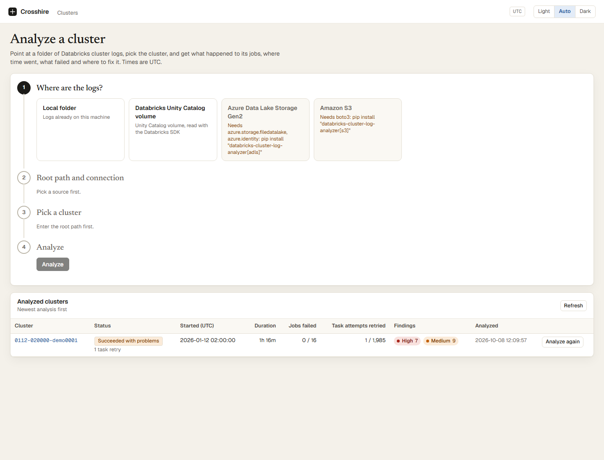
- Analyzed clusters come first. Each row shows the same status as the cluster's own page, and why: Failed with what failed, Succeeded with problems with what went wrong ("1 task retry", "2 out of memory"), or Succeeded. It also shows the jobs failed, the task attempts retried and the findings.
- Analyze another cluster opens four steps: where the logs are (local, volume, ADLS, S3), then the root path, then the cluster (it lists them with their last change), then Analyze. Remote logs are copied to a local cache incrementally. With no cluster analyzed yet, the steps are open from the start.
- Analyze again: rebuilds a cluster from the raw logs it was built from, with the newest version of the tool. The button is greyed out, with "Raw logs gone", when those logs are no longer on disk. A cluster built with an older analyzer says so next to its status.
- No raw logs any more?
dbx-log-analyzer refresh-findingsbrings an older analysis up to date from its own datasets: the status, the stage numbers taken from the tasks (skew from successful attempts, the storage and DataFrame-cache split), the MERGE, capacity and workload findings, the incidents, the per-minute table and the diagnosis. Log lines and the Coverage line need the raw logs.
Cluster overview
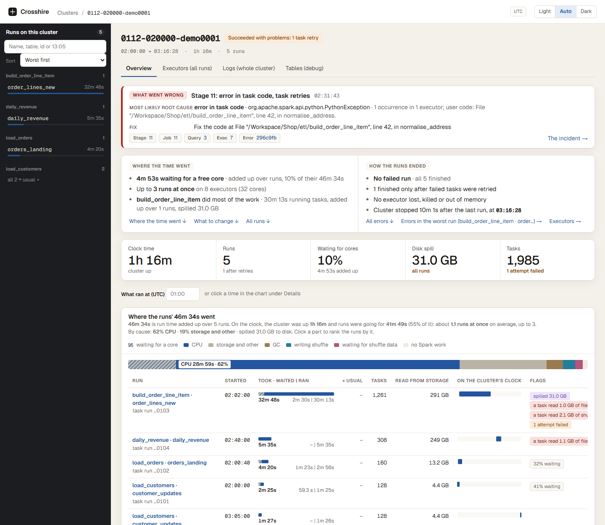
- The status next to the cluster id is the same everywhere (Home, the cluster, a run): red Failed (and what failed, including a query that failed outside any run), amber Succeeded with problems (out of memory, executors lost, stages failed, task retries) or green Succeeded.
- What went wrong comes first when something failed: the top incident from Findings, its most likely root
cause, the first line of its fix and links to the stage, job, query, executor and error. Here: the Python
IndexErrorinnormalise_address, line 42. Nothing is shown when nothing failed. - The numbers come after the two short answers, and only those that say something: a tile with nothing to report (no spill, no waiting, no retries) is left out and kept under Details with the rest (shuffle, idle compute, the most runs at once, and What ran at a given time). The colour sits on the problem ("1 attempt failed"), not on the total; the long explanation is on hover.
- Coverage: when the logs are incomplete, a line under the cluster's (and each run's) title says what is missing (event-log files for a stretch of time, executors without logs, no GC lines, a driver log that starts late) and which numbers that leaves partial. Click it for the list. Idle time and autoscaling delays are not claimed across such a gap.
- Clock time: how long the cluster was up (1h 16m) next to the run time added up over runs (46m 34s), and how many runs were going at once on average. When runs overlap, the sum is bigger than the clock: 8 days of run time on a 12-hour cluster is not a bug.
- Waiting for cores: the time each run's tasks sat queued on a full cluster (every core busy), not only the wait before a stage's first task. Added up over runs and as a share of run time (here 31m 48s, 68%), and on the clock: how long at least one run was waiting.
- Idle compute (under Details) counts worker core-seconds from each executor's start against the core-seconds of successful tasks. The machines are billed from a little before their executor starts, so what you paid is somewhat higher.
- Where the time went and How the runs ended: the two short answers in plain words, with links to the detail. The first one reads Why runs were slow when runs were slow or waited a lot. A link that opens one run says so ("Errors in the worst run (…)"); All errors stays on the cluster.
- Where the runs' time went: one bar split by cause, then every run with its wait and run time, its usual time, rows and flags (spill, big task reads, retries). The left rail lists the runs grouped by program, worst first; on a phone it folds to one line (the run picked) and opens on tap.
What to change
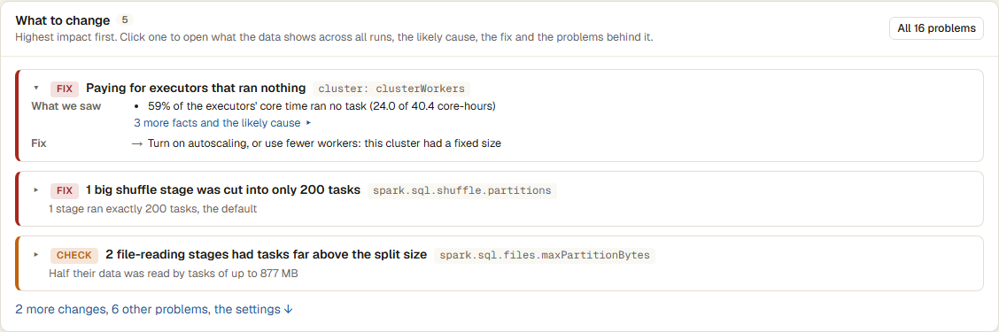
On the Cluster overview, and again on each run's Overview. Start here when you want the fix, not the analysis.
- Highest impact first. FIX means the data is clear; CHECK means look before you change. The setting a
card is about (for example
spark.sql.shuffle.partitions) sits next to its title. - Opened: what we saw (the headline, with more facts and the likely cause on demand), the fix, links to the queries, runs and stages, and the problems found behind it. Long stage lists show the top 10 first.
- Further down: other problems not covered by a change, by kind, and the cluster's settings with where each value came from (cluster, code or default).
Tables read
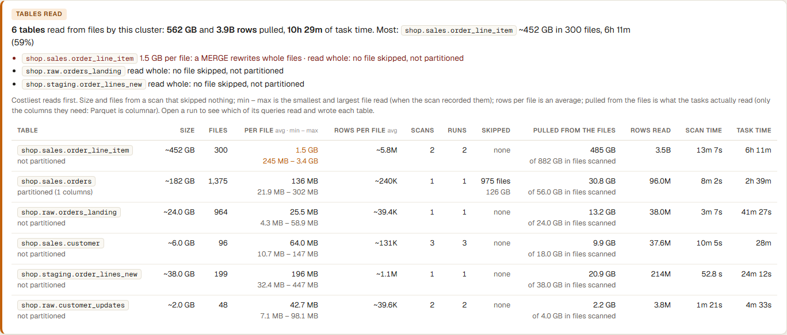
- The headline: how many tables, the bytes and rows pulled from files, the task time, and the costliest table with its share of the time.
- Flags: files over 1 GiB on average (on a MERGE target without deletion vectors, a MERGE rewrites whole files) or a largest file over 1 GiB (some files need compacting), a big table read whole with no files skipped, a table that isn't partitioned, and a table scanned several times in one run or query. A table read by a stream is sized over all its micro-batches. A streaming batch's file scan sits in a query that runs no job itself; it counts for the run of the queries under it, so every table the cluster lists also shows on the run that read it (a run whose batch read no files has none to show).
- The list: top 10 first. Columns: size, files, per file, rows per file, scans, runs, files skipped, pulled from the files (only the columns needed: Parquet is columnar), rows read, scan time and task time. The same panel is on every run and every query. The panel is amber only when a table is flagged; with nothing flagged it shows the one headline line and the list opens from Show the N tables. How to read it explains the columns on hover.
- Per file: the average file, and under it the smallest and the largest file read (here 245 MiB – 3.4 GiB
for
order_line_item). Databricks records both for every scan; on open-source Spark only the average is shown. A wide range means a few huge files next to many small ones: compaction (OPTIMIZE) evens them out. - Rows per file: rows read ÷ files read. It is an average only: the logs count rows per scan, not per file.
- On a run, the Pruning column of What it read and wrote also shows each query's smallest and largest file read.
- Read from storage is what came from files and tables. Spark also counts a read from a DataFrame cache as input; that part is shown apart ("+ 120 GiB from a DataFrame cache"), so a cached table read ten times does not look like ten big reads. A cache is compared with the memory a cache can use; one larger than that is linked to the GC, out-of-memory and spill problems of its run.
- Per-minute numbers (idle compute, the CPU chart, the spill and GC peaks, Spill and shuffle over time) spread each task's bytes and time over the minutes it ran, not all into the minute it finished. The spill peak is disk spill only.
- × usual compares a run only with earlier runs of the same code on the same table.
- Skew and task times come from the successful attempts, as in Spark's own stage summary: a failed attempt stuck in GC is not a skewed task. The time buckets of the cause bar count failed attempts once, as their own part.
- A MERGE has one set of numbers on every page: the target read (not the copy of the source it reads again), the files touched of the files in the table, and, with deletion vectors, "matched rows marked deleted" instead of "rewrote the files". With Change Data Feed on, the change rows are counted apart; rows updated and inserted are shown only when they can be derived, and then marked derived.
- The status, on a cluster with runs, counts a failed query only when it ran a stage or belongs to a run; a platform's own query that failed in a few milliseconds is still listed, outside any run. A job cluster that stops after its last run finished has ended normally; that run is not shown as cut off.
One run
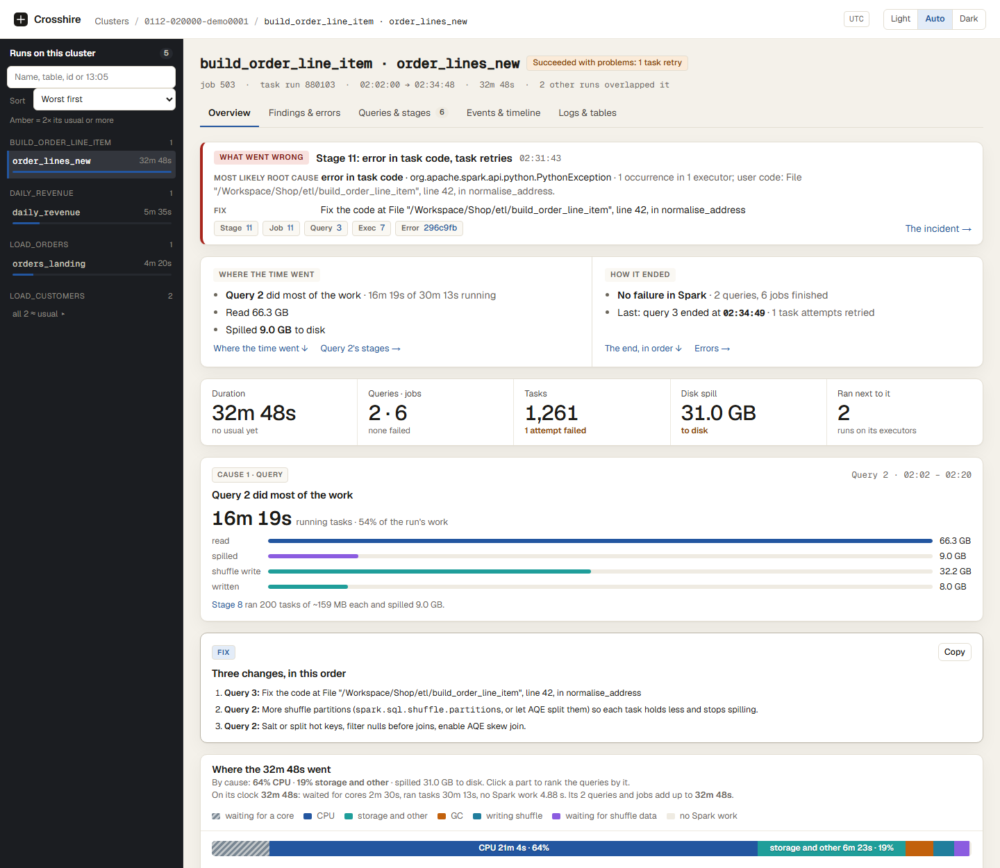
- The same order as the cluster: what went wrong (when something failed), why it was slow and how it ended, then the numbers that say something: duration against its usual time, queries and jobs, failed task attempts, disk spill (memory spill on hover), other runs on its executors, and executors lost to out of memory, a crash or a kill (autoscaling does not count). Shuffle and the rest are under Details.
- Cause cards name the query that did most of the work and what it read, spilled and wrote. The fixes come in the order to make them, the fix for what broke first.
- On its clock: waited for cores, ran tasks, and no Spark work (driver code). While it ran tasks, the time they sat queued on a full cluster is counted as waiting too (here 22m 5s, with 2 other runs on the same executors). An idle gap of 30 minutes or more is called idle, not driver code. Every query is listed with its wait, run time and rows in.
- What to change for this run is under Details, so the first screen has one fix list: the same folded cards as the cluster, limited to the changes this run is part of, with this run's problems behind each. The full list of problems is under Details too.
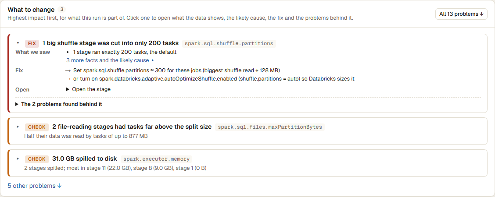
One query
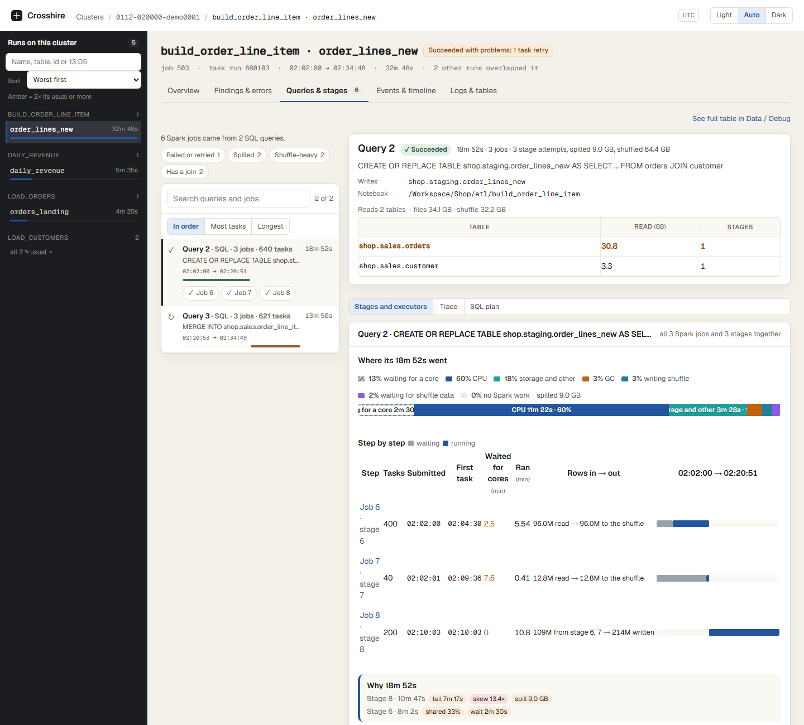
- One row of views: Flow, Time, Chain of queries, Trace and SQL plan. Under the title of a query's own page, one line gives the verdict: its worst finding in one sentence.
- Reads and writes: every table, with the bytes read and the stages that read it.
- Step by step: each stage with its tasks, when it was submitted, when its first task started, the wait for cores and the run time. Rows in → out shows, for example, "96.0M read → 96.0M to the shuffle" or "109M from stage 6, 7 → 214M written". You can follow the data through the query.
- Why it took that long: the stages that held it up, with their tail, skew, spill, wait and share of the executors.
- The graph (Flow or Time) draws the query box with its jobs and stages. Each stage box shows its rows in → out and its spill and shuffle. Each link is labelled with the rows passed over it. In SQL plan, the operators graph starts folded when Spark recorded numbers for under half of the operators.
One stage: rows in and out
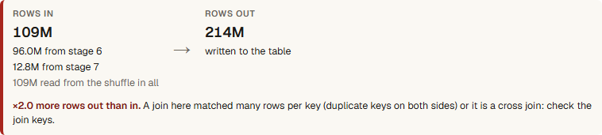
- Rows in: rows read from each table, plus the rows each parent stage wrote to the shuffle. A parent that Spark skipped (adaptive query execution reused its output) is marked as such. When there are several parents, the total read from the shuffle is shown too.
- Rows out: to the shuffle for the next stage, or written to the table.
- Flags: ×1.5 or more rows out than in means a join matched many rows per key (duplicate keys on both sides) or is a cross join. Far fewer out than in means the stage filtered or aggregated. A stage that grows rows by an explode, such as the change rows of Change Data Feed, is not flagged as a bad join. When Spark recorded no row counts, the strip says so; nothing is guessed.
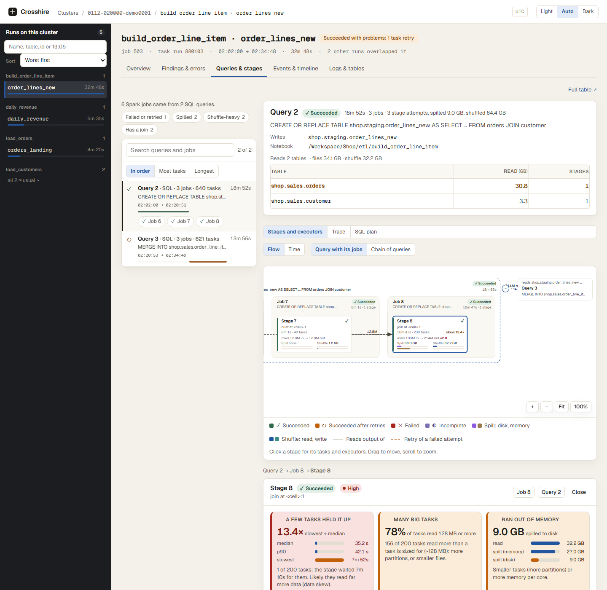
One stage: its tasks
A stage is split into tasks, one per partition, and most performance problems show up in how those tasks differ from each other. Open a stage (click it in the graph, the step list or any link that names it). Below the rows strip come the stage's numbers, then its tasks: not as thousands of rows, but as statistics you can read in one look.
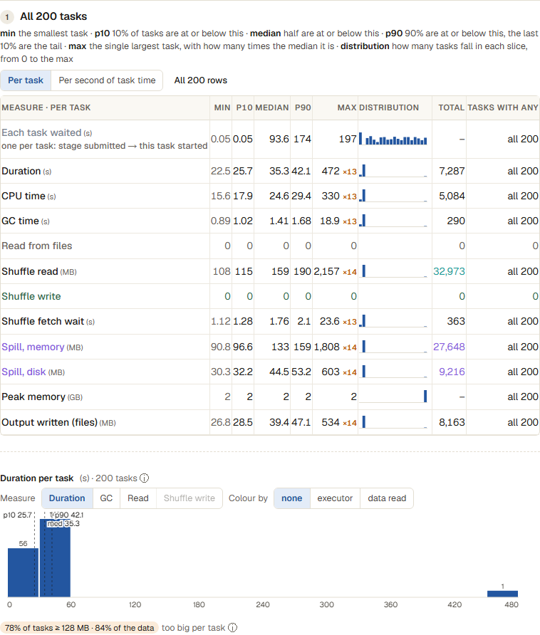
- One row per measure: each task's wait for a free core (from the stage being submitted to the task starting), duration, CPU time, GC time, bytes read from files, shuffle read and write, shuffle fetch wait, spill to memory and to disk, peak memory and bytes written.
- Columns: min, p10, median, p90 and max, then a small histogram, the total and how many tasks had any. The max carries ×N, how many times the median it is, when that is 3 or more. Units sit next to each measure (s, MiB, GiB), chosen for the typical value.
- Per task, or per second of task time: the second view divides each measure by the task's duration (GC as a % of its time, MiB of shuffle per second), so a task that is slow because it got more data reads the same as the others.
- The histogram below shows one measure (duration, GC, read, shuffle write) as slices, with dashed lines at p10, the median and p90. Colour it by executor to see whether the slow tasks sit on one machine, or by data read to see whether they are the ones that read the most.
- Size bands: "78% of tasks ≥ 128 MiB · 84% of the data" means the tasks were given more than the ~128 MiB Spark sizes a task for: too few shuffle partitions, or files that can't be split.
- Export tasks (CSV) saves every task of the stage. All 200 rows opens the same tasks in Raw data, already filtered to this stage.
How to read it
| You see | It usually means | Look next |
|---|---|---|
| Max duration ×10 or more, and max shuffle read or file read about as many times the median | Data skew: one key or partition holds far more rows | Skewed tasks block; salt the key or let AQE split it. On a JDBC read, skew is measured in rows: pick a better partitionColumn or bounds |
| Max duration ×10 or more, but it read about the same as the others | A slow executor, long GC, or a task that waited on shuffle fetch | Tasks by executor, the GC and fetch-wait rows, Executors |
| Median and p90 close together, and most tasks ≥ 128 MiB | Every task is too big: too few partitions | Raise spark.sql.shuffle.partitions or use auto |
| Spill (memory or disk) on most tasks | Partitions are bigger than the memory a task gets | More partitions, or more memory per core |
| "Each task waited" much larger than the stage's first wait | Tasks ran in waves: more tasks than free cores | Tasks over time; other runs on the same executors |
| GC time over ~10% of duration | Memory pressure in the JVM | Executors (GC pauses and heap), cache and broadcast sizes |
| Shuffle fetch wait high | Tasks waited on other executors for shuffle data | Lost executors, network, an overloaded executor |
Tasks by executor
Open By executor under the tasks. It answers the question every skew hunt ends with: is it the data or the machine?
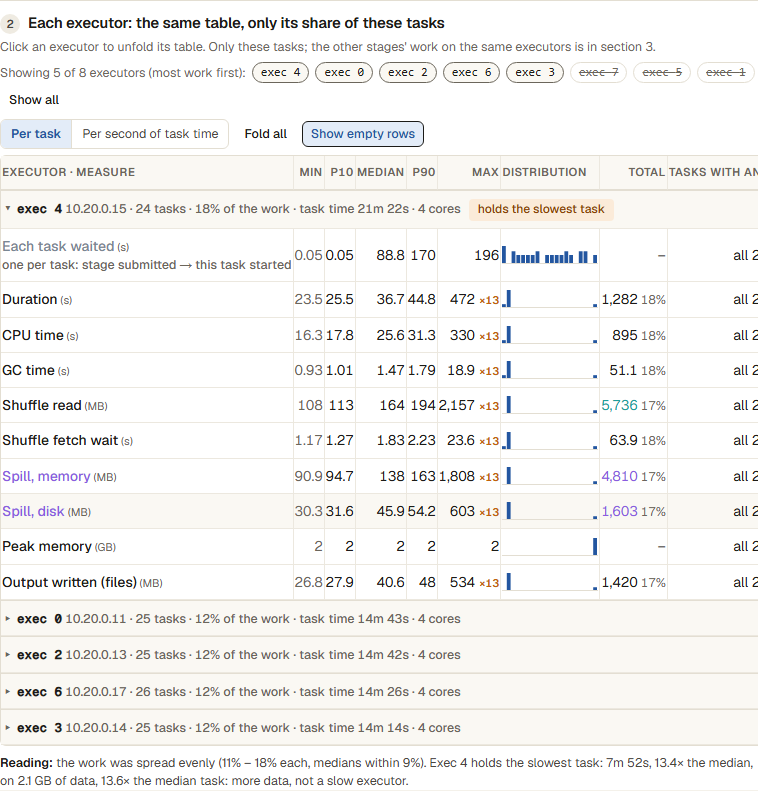
- One row per executor: its host, how many of the tasks it ran, its share of the work and task time, its cores, and a badge such as holds the slowest task. Click a row to unfold the same table as section 1 for only that executor's tasks.
- The reading in plain words: how evenly the work was spread, and whether the slowest task was slow because it had more data (skew) or because its executor was slow (look at that executor's GC, spill and other work).
- With more than 5 executors, the ones with the least work are hidden behind chips; Show all brings them back.
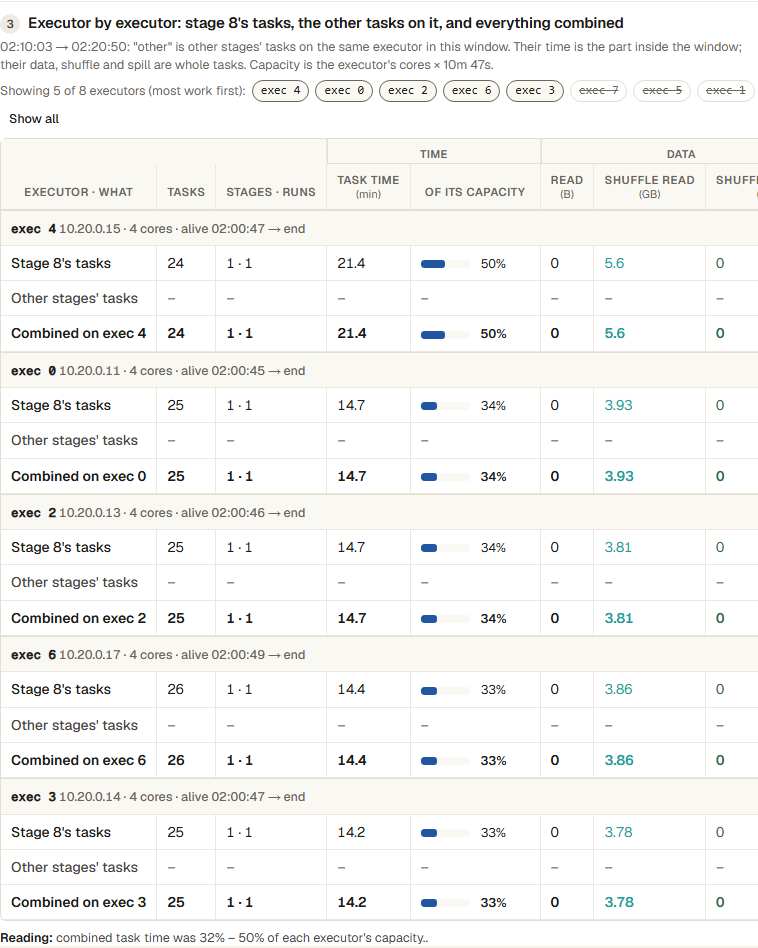
- Capacity is the executor's cores × the stage's window. 50% means half its core time went to tasks. Low numbers with a long stage mean cores sat idle, often waiting on one straggler.
- Other stages' tasks shows a noisy neighbour: another stage or another run using the same executor at the same time. Their time counts only the part inside this stage's window.
- Data columns (read, shuffle read and write, spill) tell you which executor did the heavy lifting.
Slowest tasks and skew
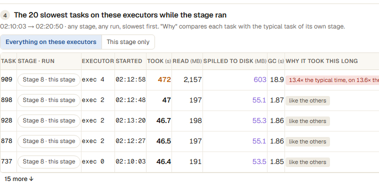
- Everything on these executors or This stage only. Each row has the task, its stage and run, the executor, when it started, how long it took, what it read, spilled and spent in GC.
- Why it took long compares each task with the typical task of its own stage: "13.4× the typical time, on 13.6× the data" is skew; "like the others" means the task was normal for its stage.
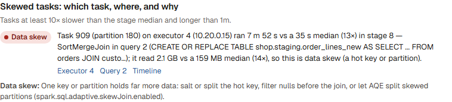
A task at least 10× slower than the median and longer than a minute is listed with its partition, executor and host, the plan operator it ran (here the SortMergeJoin) and the query. The verdict (data skew or slow executor) comes with its fix, and links go to the executor, the query and the timeline.
Tasks over time
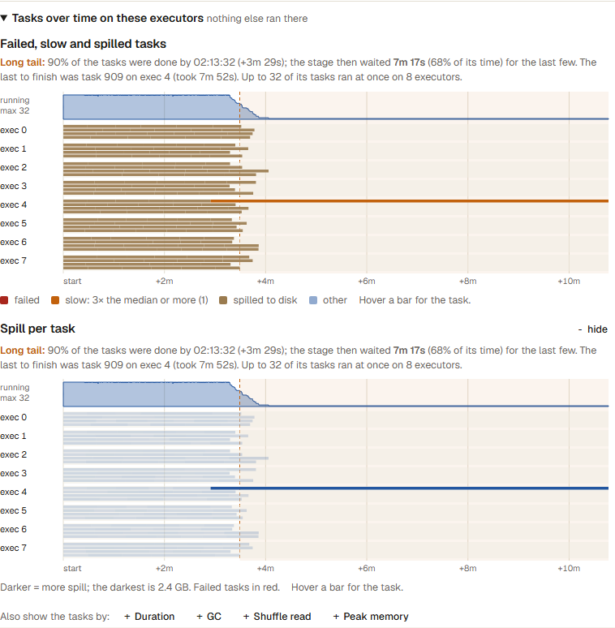
- The long tail line says when 90% of the tasks were done and how much of the stage's time went on waiting for the last few. A long tail is the clearest sign of skew.
- Running on top shows how many tasks ran at once against the cores available.
- Failed, slow and spilled tasks are coloured: red failed, amber 3× the median or slower, and spilled tasks in a colour of their own. Add panels for duration, GC, spill, shuffle read or peak memory per task; darker means more.
- When other stages shared the executors, a first panel shows who had the cores: this stage's tasks next to the others.
- Hover a bar for the task: its executor, times, data and spill.
A query or job: all its tasks
A query or a Spark job has the same task sections over all its stages: All its tasks (with each stage's wait for its first core added as a row) and By executor. Above them, What the executors were doing at the same time puts the query on the executors' clock.
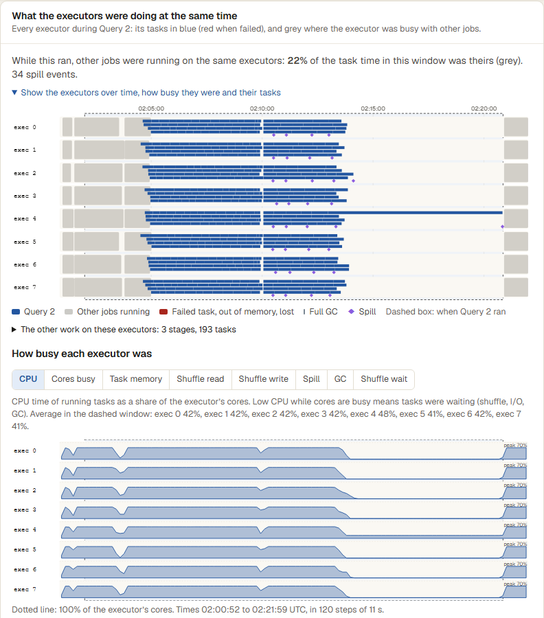
- The summary line says how much of the task time in the query's window belonged to other jobs (22% here) and how many spill events there were.
- Lanes: one per executor, with the query's tasks, other jobs, failed tasks, out-of-memory or lost executors, full GCs and spills. The dashed box is the query's window.
- How busy each executor was: CPU, cores busy, task memory, shuffle read and write, spill, GC and shuffle wait over time. Low CPU while the cores are busy means tasks were waiting (on shuffle, storage or GC), not computing.
- Tasks on each executor: task time, failures and lost executors per executor, for this query.
Chain of queries
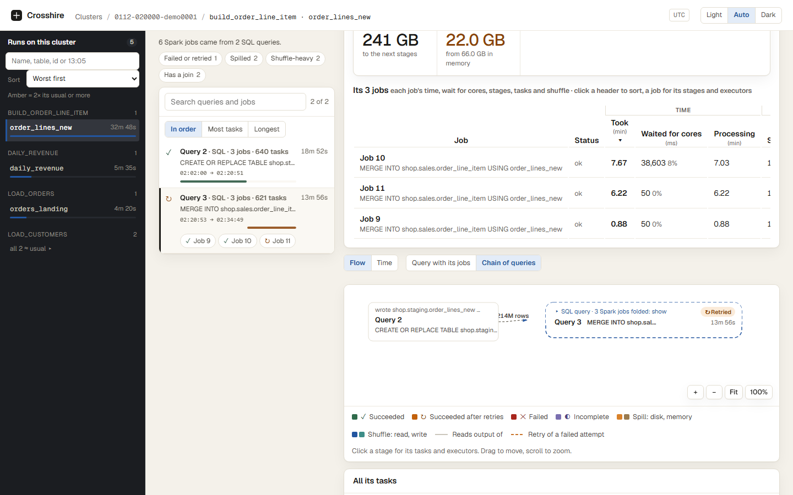
Pick Chain of queries in the query's row of views to see every query linked to this one, upstream and downstream. A query is linked when it wrote a table this one reads, reused its shuffle output, or ran inside it. Arrows carry the rows passed; rows written by a MERGE with Change Data Feed on are marked as including the change rows. A "+" on either side unfolds the rest of the chain.
Events
Use it when you need the order of things: what ran when, what waited on what, and what happened just before a failure.
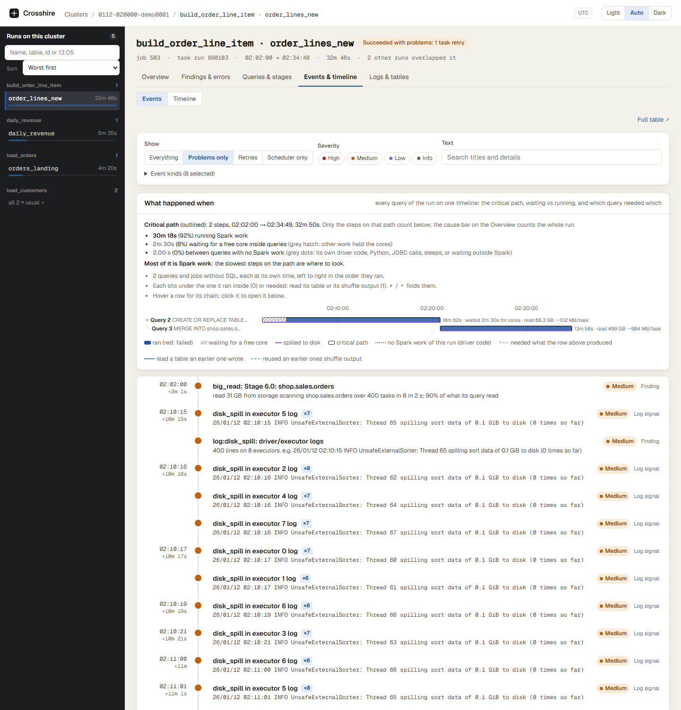
- What happened when: every query of the run on one timeline, with the critical path outlined. It splits the path into running Spark work, waiting for a free core, and time between queries with no Spark work (your driver code, Python, JDBC calls, sleeps). Arrows show which query needed which: read a table an earlier one wrote, or reused its shuffle output.
- The event list: query, job and stage starts and ends, task retries, important log lines and findings, one stream in time order. Each row shows the clock time and the offset from the run's start. Findings are marked with their severity, for example "big_read: Stage 6.0: shop.sales.orders".
- Filters: it opens on Problems only (failures, retries, removed executors, log errors and findings); Everything adds every start and end. Also Retries or Scheduler only; severity (High, Medium, Low, Info); a text search over titles and details; and the event kinds to show.
Timeline
Use it to see when things went wrong, and on which executor.
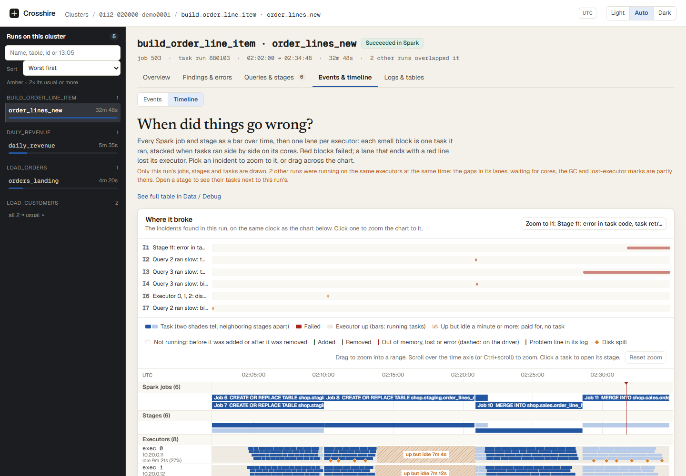
- Where it broke: the worst 5 incidents of the run (or cluster) on the same clock as the chart, with time ticks under them; "N more incidents" shows the rest. Click one to zoom the chart to it.
- Spark jobs and stages as bars, then one lane per executor with its host and how long it sat idle. Each small block is one task; tasks that ran side by side on the cores are stacked.
- Red blocks failed. A lane that ends in a red line lost its executor. Hatched stretches mean the executor was up but idle for a minute or more: paid for, running no task. Diamonds mark disk spills. GC pauses and problem lines in the executor's log are a thin strip at the foot of its lane, darker where they are dense, so thousands of them never hide the tasks; out of memory and lost executors stay full-height red marks.
- Drag across the chart to zoom into a range, scroll over the time axis to zoom, and click a task to open its stage. Scoped to a run, only that run's work is drawn, and a note says how many other runs shared the executors.
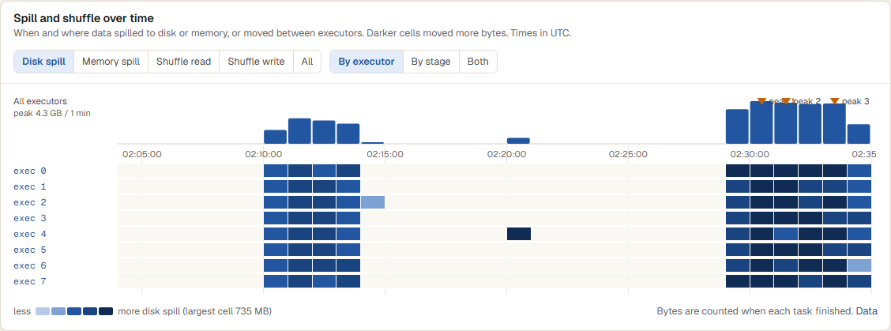
Pick disk spill, memory spill, shuffle read, shuffle write or all, by executor, by stage or both. Each task's bytes are spread over the minutes it ran. The bar on top adds up all executors and marks the peaks. One dark row means one executor did the spilling (skew); a dark column across all of them means the whole stage was short of memory.
Executors
Use it when you suspect the machines rather than the data: memory, GC, lost executors, or executors that sat idle.
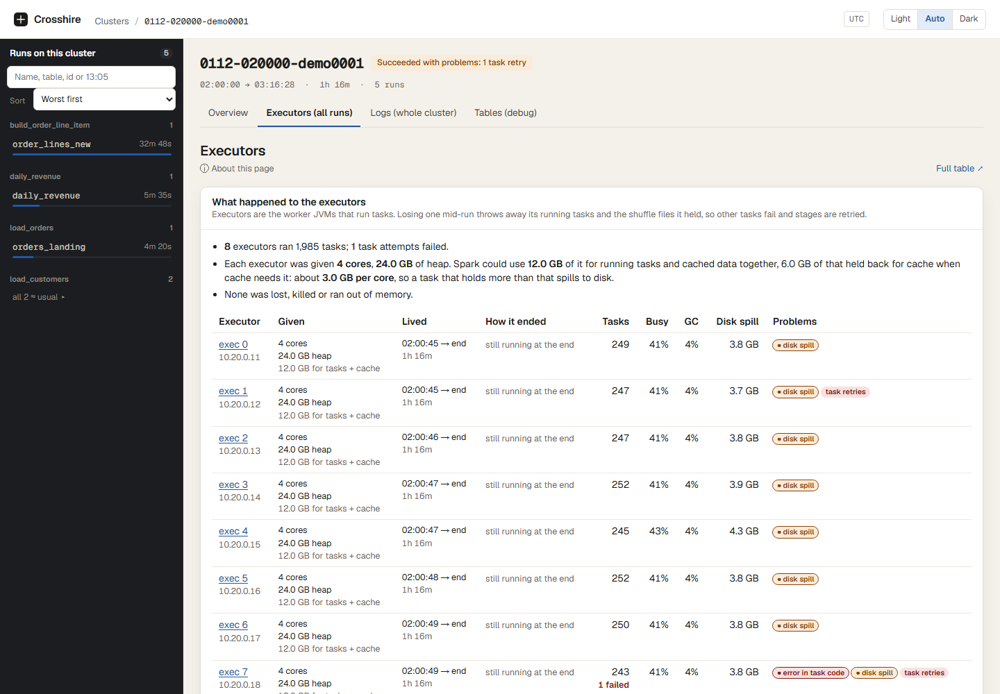
- What happened to the executors: how many ran how many tasks, what each was given (cores, heap, the memory Spark could use for tasks and cache, and about how much per core: a task that holds more spills), and whether any was lost, killed or ran out of memory. When autoscaling removed executors, errors and fetch failures on them are linked to that removal in Findings.
- The table: each executor with its host, cores and heap, when it lived, how it ended (still running, decommissioned, lost, out of memory), tasks and failed tasks, how busy it was, GC share, disk spill and problem chips such as error in task code, task retries or disk spill. Click one to open it.
- When each executor was alive, and how hard it worked: one row per executor on the run's clock. The upper band is this run's CPU, the lower band its task memory; hatch is any run's tasks; dots mark spills and diamonds full GCs.
- GC pause time per executor from the GC log. Names in red had 3 or more full GCs, which stop everything and usually mean the heap is too small. Select an executor to see its GC pauses and heap over time.
Findings
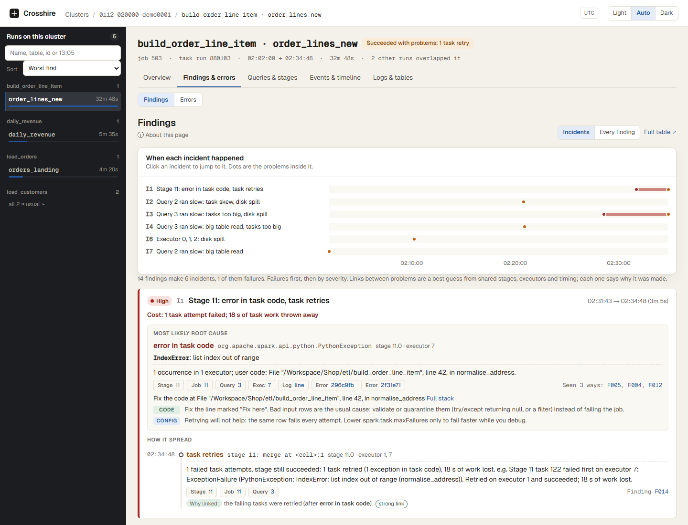
Kinds include disk spill, skewed tasks, tasks too big, big table reads, MERGE reading far more of the target than it merged, waiting for cores, too few or too many shuffle partitions, file-reading tasks above the split size, GC pressure, a DataFrame cache larger than memory, a window dedup that removed no rows, errors in task or driver code, timeouts connecting to a source database over JDBC, task retries, out-of-memory or lost executors, and executors paid for but idle. Related findings are grouped into one incident with its root cause and effects, for example "Query 2 ran slow: task skew, disk spill" where the skew caused the spill. A cache larger than memory is linked to the GC, out of memory and spill of its run, and an autoscaling removal to the errors on the executors it removed.
- Severity: one problem gets one High; its side effects are Medium (for example big tasks on a stage whose spill is already high). A finding tied to no run and no stage is demoted.
- Advice fits the case: a skewed JDBC read is measured in rows and gets advice on its
partitionColumnand bounds, not salting; one long stage holding every core under FIFO gets FAIR pools, its own cluster or fewer JDBC partitions; burst advice comes only when 3 or more runs overlapped. - On the cluster's Findings tab you see every run's problems, each with a chip naming its run that opens that run's findings. Inside a run, only that run's.
Errors
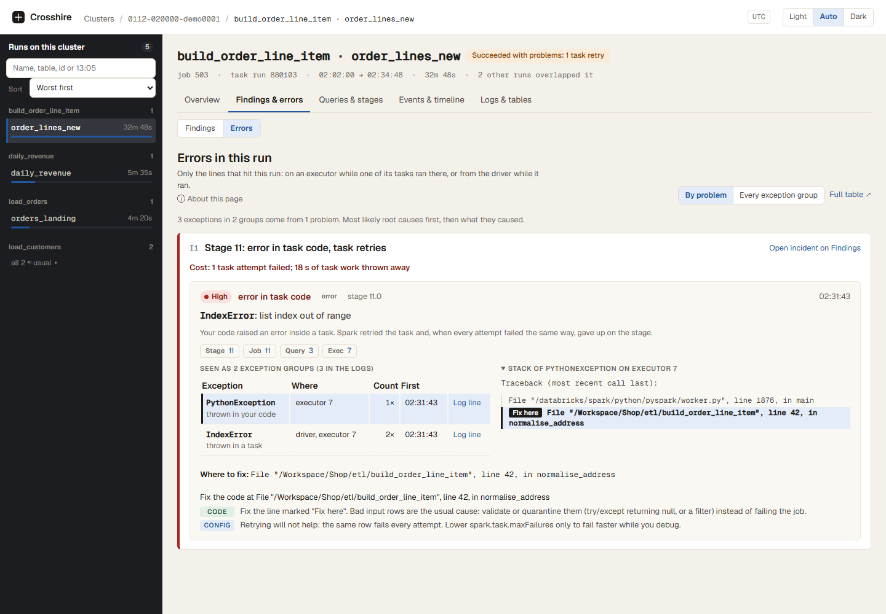
normalise_address, line 42, marked
"Fix here" in its stack.- By problem: the same failure is usually logged several times (thrown on an executor, reported again on the driver, wrapped for the notebook), so the exceptions are grouped into the problem they come from. Each problem shows its cost ("1 task attempt failed; 18 s of task work thrown away") and links to its stage, job, query and executor.
- Exception groups: each exception with where it was thrown (executor 7, the driver), how many times, when first, and a Log line link that opens the exact line in Logs.
- The stack with the first frame of your code marked Fix here, skipping Spark's and Python's own frames. Where to fix repeats it as one line.
- Tips in layers: CODE (validate or quarantine bad rows) and CONFIG (retrying won't help when the same row fails every time). Switch to Every exception group for the flat list.
- Scoped to a run, only lines that hit that run are shown: on an executor while one of its tasks ran there, or from the driver while it ran. The cluster's Errors tab shows every run's errors, each problem with a chip naming its run.
Logs
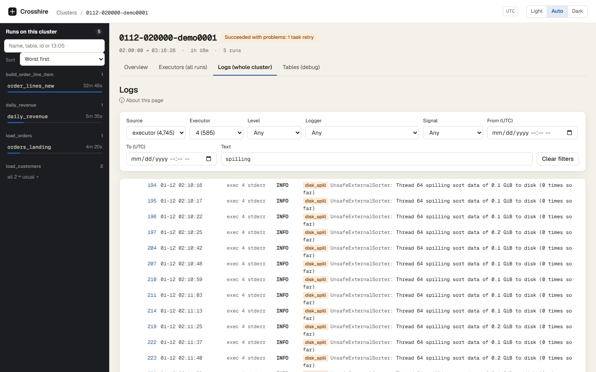
- Every line of the driver log4j logs and the executors'
stderrandstdout, in file order, with its time (UTC), source, file, level, logger and message. Multi-line entries such as stack traces stay together. WARN lines are amber. - Level chips on top: All lines (the default, so a traceback logged at INFO is never hidden), Fatal, Errors and Warnings, each with its count.
- Filters: source (driver or executor), executor, level, logger, signal (a known problem pattern such
as
executor_oom,fetch_failure,disk_spillorpython_error), a from/to time and a case-insensitive text search. Each drop-down shows how many lines each value has. - Signal chips on a line say which known problem it matched. The patterns live in the rules file, so you can add your own.
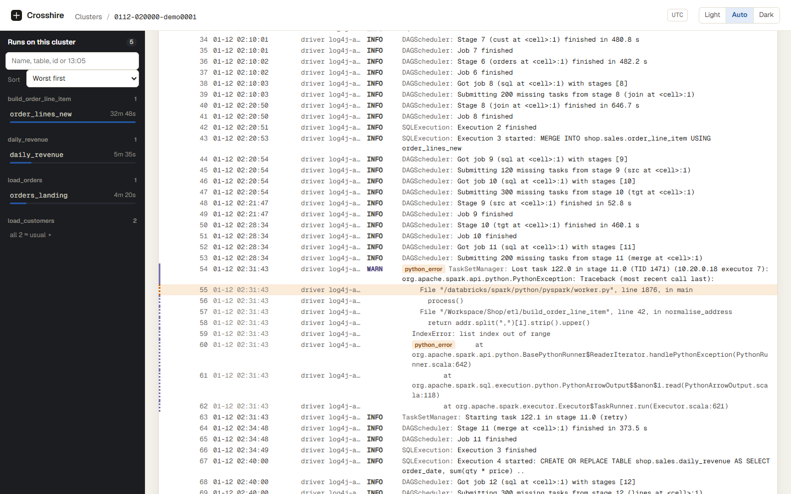
How to use it while debugging: start from an error or finding and follow its Log line link; read the
lines just before it (what the executor was doing), then filter by that executor and a time window around the
failure. To check a suspicion across the cluster, filter by signal: executor_oom or
executor_lost for dying executors, fetch_failure for lost shuffle files,
storage_throttling for cloud storage limits. Logs always covers the whole cluster; use the From
and To times to narrow it to one run.
Raw data
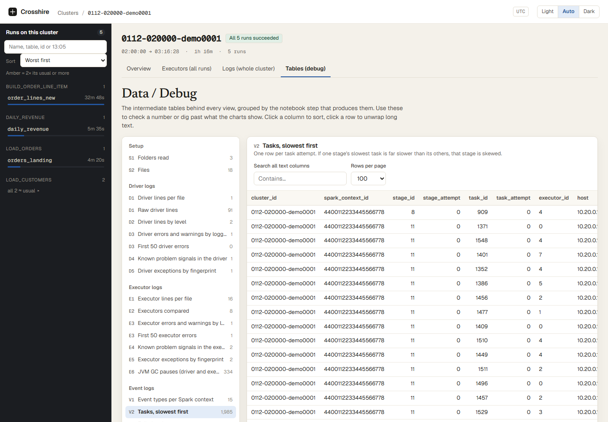
The Raw data tab (on the cluster, and under Logs & raw data in a run) shows every dataset the screens are built from. Use it to check a number you doubt, or to go past what the charts show.
- Grouped by step: Setup (folders and files read), Driver logs, Executor logs (including JVM GC pauses), Event logs (tasks, failed task reasons, retries, stages, jobs, queries, executors, spill and shuffle over time, cluster info), Combined (query, stage × executor and executor profiles, the run story) and Analysis (signals, exceptions, findings, the timeline). Each shows its row count.
- Search all text columns, sort by any column, choose rows per page, and click a row to unwrap long text such as a plan or a stack.
- Charts that summarize a dataset carry a Full table ↗ link that opens the table behind them here, often already filtered (a stage's tasks, a query's stages).
- Outside the UI: the same tables are Parquet files in the output folder, so you can query them directly:
duckdb -c "SELECT stage_id, task_id, executor_id, task_ms/1000 AS secs, shuffle_read/2^30 AS shuffle_gib
FROM 'C:/dbx/output/0112-020000-demo0001/tasks.parquet'
ORDER BY task_ms DESC LIMIT 10"Or in Python: pd.read_parquet(".../tasks.parquet"). --duckdb on build or
analyze also loads every dataset into one insights.duckdb.
Which screen answers what
| Question | Where to look |
|---|---|
| Did anything fail, or did it only retry? | Home status line, Cluster overview "How the runs ended", Errors |
| Where did the time go? | Cluster overview and run overview: the cause bar (waiting for cores, CPU, storage, GC, shuffle, no Spark work); Events → What happened when |
| Was it capacity or the work itself? | Waiting for cores on the overview; "Each task waited" in a stage's tasks; other runs on the same executors |
| Which table cost the most? Was it read whole? | Tables read (cluster, run, query) |
| Did a join blow up the rows? | One stage: rows in and out; the graph's link labels |
| Is one task holding everything up? | A stage's tasks (max ×N), Slowest tasks and skew, Tasks over time (long tail) |
| Is it the data or the machine? | Tasks by executor: the reading under section 2 |
| Was an executor shared, idle or overloaded? | Tasks by executor, section 3; a query's executors at the same time; Timeline (hatched idle) |
| Was memory the problem? | Spill rows in the tasks, Spill and shuffle over time, Executors (GC, heap, out of memory) |
| Which line of my code failed? | Errors: the frame marked Fix here; the Log line link |
| What did the executor log just before it died? | Logs: the line in context, filtered by executor and time |
| What setting should I change? | What to change (cluster and run); the cluster's settings with where each value came from |
| Are the logs complete? | The Coverage line under the cluster's or run's title |
| I don't trust a number | Raw data: the table behind it, or the Parquet file with DuckDB |
A 2 a.m. workflow
- Analyze the cluster (or click Analyze again). Read the status line: did a job or query fail, or did it only retry tasks? If a Coverage line shows, note what is missing from the logs.
- Cluster overview: compare clock time with the run time added up, check the wait for cores, and read the two short answers. This usually tells you whether the issue is capacity (waiting) or the work itself.
- What to change: open the top card. Its problems link straight to the query or stage.
- Tables read: one look tells you whether a table was read whole, has huge files, or was scanned too often.
- Open the worst run, then its slowest query: follow the rows in → out stage by stage. A join that grows rows, a skewed stage or a spill stands out.
- Open the slow stage's tasks: a max ×10 on as much data is skew; a max ×10 on normal data is a slow executor or GC. By executor says which, in one sentence.
- Something failed? Errors shows the line of your code to fix; its Log line link shows what the executor was doing just before. Executors shows whether the machine ran out of memory or was lost.
- Still not clear? Dig in yourself with Events, Timeline, Executors, Logs and Raw data. By now the findings have already ruled most things out.
What it cannot tell
- Only what Spark logged. It can't see code that never reached Spark (pure Python on the driver shows only as "no Spark work"). It also can't see why a Databricks job was cancelled outside Spark.
- Row counts are missing when Spark recorded none, for example for some scans, or for stages skipped under adaptive query execution. It then says "not recorded" and never guesses.
- Table sizes come from scans that skipped nothing. A table only ever read with filters shows the size of what was read.
- Missing logs leave gaps: rolled event-log files that are gone, executors without log folders, no GC lines. The Coverage line names each gap and the numbers it affects; what falls in a gap is unknown, not zero.
- Serverless compute delivers no cluster logs. The analysis then says so.
Sources and log layout
--source | --root | Options | Credentials |
|---|---|---|---|
local | a folder containing cluster folders | ||
volume | /Volumes/<catalog>/<schema>/<volume>/<path> | --profile, --host, --token | ~/.databrickscfg profile or DATABRICKS_* env |
adls | abfss://<container>@<account>.dfs.core.windows.net/<path> | --account-name, --container, --sas-token, --account-key | SAS / key, else DefaultAzureCredential |
s3 | s3://<bucket>/<prefix> | --profile, --region, --endpoint-url | default AWS credential chain or a named profile |
Remote sources are copied into <cache>/<cluster_id>/ incrementally: files with the same
size and time are skipped. Local folders are read in place. Any folder in the Databricks log-delivery layout
works:
<root>/<cluster_id>/
driver/ log4j-active.log, log4j-<yyyy-mm-dd-HH>.log.gz, stdout, stderr (+ rolled), stacktrace.log
executor/ <app-id>/<executor-id>/stdout, stderr (+ rolled .gz)
eventlog/ <cluster_id>_<hash>/<spark_context_id>/eventlog (+ rolled eventlog-<date>.gz)
init_scripts/ (ignored)Command line
# which clusters are there (newest driver activity first)?
dbx-log-analyzer clusters --root ./my-logs
dbx-log-analyzer clusters --source volume --root /Volumes/cat/sch/vol/cluster_logs --profile DEFAULT
dbx-log-analyzer clusters # no source: the clusters already analyzed in ./output
# download (remote, incremental) and parse into <output>/<cluster_id>/
dbx-log-analyzer analyze --source s3 --root s3://my-bucket/cluster-logs --cluster 0101-000000-abcd1234
dbx-log-analyzer analyze --source s3 --root s3://my-bucket/cluster-logs --latest 5
# download only (remote, incremental) into <cache>/<cluster_id>/
dbx-log-analyzer download --source s3 --root s3://my-bucket/cluster-logs --cluster 0101-000000-abcd1234
# parse a local folder
dbx-log-analyzer build --input ./cache/0101-000000-abcd1234 [--output ./output] [--duckdb]
# older outputs: bring them up to date from their own datasets, without the raw logs (status, stage numbers,
# storage vs DataFrame-cache reads, MERGE, capacity and workload findings, incidents, per-minute table, diagnosis)
dbx-log-analyzer refresh-findings --output ./output [--cluster <id>]
# which source types are available (is the optional SDK installed?)
dbx-log-analyzer sources
dbx-log-analyzer ui # http://127.0.0.1:8765; --port, --no-browser--volume /Volumes/... is short for --source volume --root /Volumes/....
build, analyze and refresh-findings take --rules; every command
takes --help.
Datasets
Each dataset is written to <output>/<cluster_id>/<name>.parquet with an explicit
schema, so empty datasets keep their columns. Next to them, summary.json holds the counts, totals,
cluster info, findings by severity, a plain-English diagnosis, the coverage (what the logs are missing), and the
folder the raw logs were read from (which
Analyze again uses). schemas.py lists every column. --duckdb also loads them into
insights.duckdb.
| Dataset | One row per |
|---|---|
tasks, stages, spark_jobs, sql_queries, executors | from the Spark event log; stages carry rows read, from and to the shuffle, written, and their parent stages |
sql_plan_nodes | physical plan operator per query (initial and final AQE plan) with its metrics: files and bytes read and skipped, rows written, inserted, updated, deleted |
runs | a Databricks job run, notebook or session: the run every job, stage and query belongs to, with its time queued on a full cluster (queued_full_ms) |
findings, incidents | ranked problems with evidence, fix and links; how they relate (root cause, effect) |
task_retries | task that failed at least once: the cause, the retry outcome, the time lost |
hotspots | peaks: skewed tasks, shuffle and spill peaks, slowest stages and operators |
log_lines, log_signals, log_errors | log line; line matching a known problem; exception with fingerprint and first user frame |
gc_events | JVM GC pause with heap before and after |
query_profile, executor_profile, stage_executor_profile | query, executor, stage × executor summaries |
spill_shuffle_timeline, executor_busy | time bucket × executor: spill, shuffle, I/O, GC, busy and idle (each task spread over the minutes it ran) |
settings, cluster_info | Spark setting with its value and source; cluster name, runtime, nodes |
run_story | one ordered stream of scheduler events, retries, important log lines and findings |
Rules and thresholds
The thresholds (skew, spill, GC, tiny tasks, shuffle-heavy), the log signal patterns, the executor removal
categories and the framework stack-frame prefixes are all in one file:
src/databricks_cluster_log_analyzer/rules.toml. Override them with --rules my_rules.toml or
DBX_LOG_ANALYZER_RULES=my_rules.toml. Your file is merged over the defaults section by section, so it
only needs the values you change. One exception: a [[signals]] list in your file replaces the whole
default list, so copy the defaults first if you want to add a signal.
Privacy
Everything runs on your machine. The web server listens on 127.0.0.1 by default, and nothing is
sent anywhere. Keep --output and --cache outside the repo so that logs from a real cluster
can't be committed by accident.
How it is built
- Parsing streams: files are read line by line (gzip detected by magic bytes), and event-log lines are filtered
by event name before
json.loads. Transforms use pandas, and DuckDB serves the UI's queries. - The API is FastAPI and the UI is React + Vite (
frontend/). The built UI ships insrc/databricks_cluster_log_analyzer/api/static, so Node.js is needed only to change it:cd frontend && npm ci && npm run build. - Sources implement a small interface (
list_clusters,list_files,open), shared by the CLI and the API.